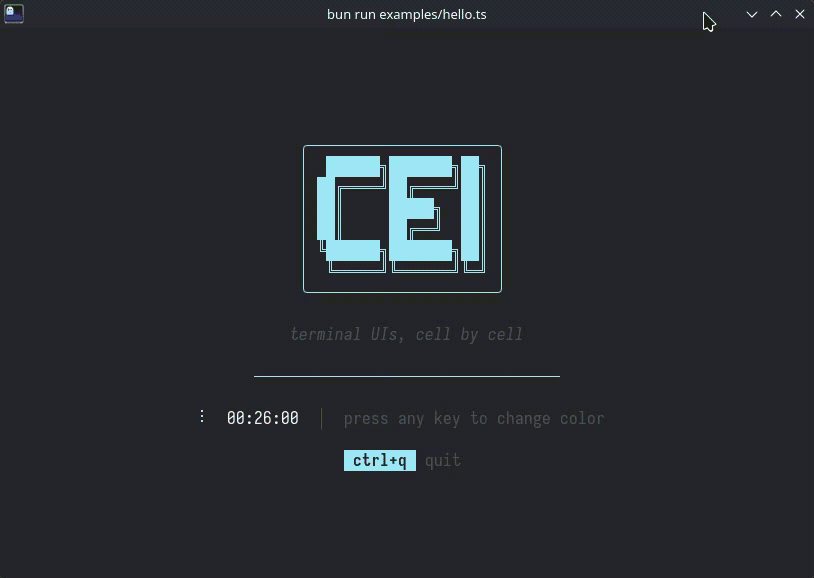

A TypeScript TUI framework built around a declarative functional API and ultra-fast rendering.

A cel is the smallest unit of a terminal display — a single character cell. Start from the smallest meaningful unit and build up, with nothing wasted.
import { cel, VStack, Text, TextInput, ProcessTerminal } from "@cel-tui/core";
let input = "";
cel.init(new ProcessTerminal());
cel.viewport(() =>
VStack(
{
height: "100%",
fgColor: "white",
onKeyPress: (key) => {
if (key === "ctrl+q") {
cel.stop();
process.exit();
}
},
},
[
Text("Hello, cel-tui!", { bold: true, fgColor: "cyan" }),
Text("─", { repeat: "fill", fgColor: "brightBlack" }),
TextInput({
flex: 1,
value: input,
onChange: (v) => {
input = v;
cel.render();
},
}),
],
),
);
| Primitive | Description |
|---|---|
VStack(props, children) |
Vertical stack — top to bottom |
HStack(props, children) |
Horizontal stack — left to right |
Text(content, props?) |
Styled text leaf |
TextInput(props) |
Multi-line editable text container |
cel.viewport(() => tree) sets the render function, cel.render() triggers re-renders.bgColor fills the rect.| Package | Description |
|---|---|
@cel-tui/types |
Shared type definitions |
@cel-tui/core |
Framework engine and primitives |
@cel-tui/components |
Pre-made components (Button, Spacer, Divider, Select) |
cel-tui ships a benchmark suite covering every pipeline stage (layout, paint, cell buffer, ANSI emission, hit testing, key parsing). On a comparable tree, the full end-to-end render completes in ~65 µs — around 15,000 renders/sec. See benchmarks/RESULTS.md for detailed numbers and an Ink comparison.
bun run bench # run all benchmarks
bun install # install dependencies
bun test # run tests
bun run bench # run benchmarks
bun run check # biome lint
bun run format # prettier check
bun run typecheck # tsc --noEmit
bun run docs # generate API docs
MIT